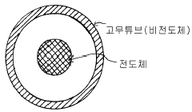
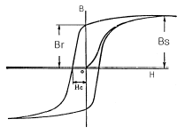
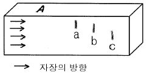
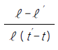
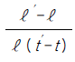
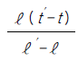
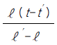

자기비파괴검사산업기사(구) (2004-09-05 기출문제)
1과목: 자기탐상시험원리
1. 자분탐상검사의 설명을 가장 적절하게 표현한 것은?
- 표면에 열린 결함만 탐상할 수 있다.
- 결함의 위치, 크기, 깊이 및 방향의 형상을 알 수 있다.
- 시험체가 강자성체가 아니어도 어느 정도 결함검출에 적용할 수 있다.
- 선형의 표면결함 검출은 가능하지만, 원형의 내부 결함검출은 곤란하다.
(정답률: 알수없음)

2. 자분탐상시험시 시험체 표면에 전기 아크로 인한 재해를 가장 많이 유발할 수 있는 시험법은?
- 극간식
- 프로드법
- 코일법
- 전류관통법
(정답률: 알수없음)
3. 자속밀도와 자계와의 관계가 올바른 것은?(단, B : 자속밀도, H : 자계의 세기, μ: 투자율, σ: 도전률 이다.)
- B = μ + H
- B = μ x H
- B = σ x H
- B = (σ x μ)/ H
(정답률: 알수없음)
4. 어떤 종류의 표준시험편에 20[Oe]의 자계를 걸었을 때 선명한 지시를 얻었는데 이 때의 자화전류가 500[A] 였다면 동일 시험편에서 40[Oe]의 자계가 필요한 경우 요구되는 자화전류는?
- 500[A]
- 1000[A]
- 1500[A]
- 2000[A]
(정답률: 알수없음)
5. 결함의 형태와 누설자속과의 관계가 잘못 설명된 것은?
- 결함깊이가 증가함에 따라 누설자속이 증가한다.
- 결함깊이가 얕고 자화의 강도가 약할 때는 누설자속이 발생하지 않을 수도 있다.
- 결함길이가 증가함에 따라 누설자속이 증가한다.
- 결함이 표면과 이루는 각도가 작게 됨에 따라 누설자 속은 증가한다.
(정답률: 알수없음)
6. 초음파탐상시험의 수침법에서 가장 일반적으로 사용되는 접촉매질(couplant)은?
- 물
- 오일
- 알콜
- 글리세린
(정답률: 알수없음)
7. 다음 중 비파괴검사(NDT)의 종류가 아닌 것은?
- 육안검사(Visual test)
- 음향방출시험(Acoustic emission test)
- 와류탐상검사(Eddy current test)
- 부식시험(Etching test)
(정답률: 알수없음)
8. 비자성 금속에 대한 열처리 온도를 증가시킬 때 나타나는 현상으로 올바른 것은?
- 전기전도도가 증가한다.
- 전기전도도에는 영향이 없다.
- 전기전도도가 감소한다.
- 열처리 상태나 금속조성에 따라 전기전도도가 증가하거나 감소한다.
(정답률: 알수없음)
9. 자분탐상검사에 앞서서 조립품을 해체하여 검사해야 하는 이유에 해당하지 않는 것은?
- 모든 표면을 탐상할 수 있으므로
- 해체하면 취급이 쉬워 검사가 수월하므로
- 조립된 부위에서 누설자속이 나타날 가능성이 많으므로
- 해체해서 검사하면 탈자가 필요없으므로
(정답률: 알수없음)
10. 막대자석(Bar magnet)에서 형성되는 자력선의 성질에 대하여 틀린 것은?
- S극에서 나와 N극으로 들어간다.
- 닫힌 회로를 형성한다.
- 서로 교차하지 않는다.
- 극에서 멀수록 밀도가 감소한다.
(정답률: 알수없음)
11. 극간법 장비를 점검한 결과가 다음과 같이 나타난 경우에 수리 또는 보수 전에는 사용하기 곤란한 장비는?
- 교류 장비로 견인력(Lifting power)이 4.6㎏인 장비
- 교류 장비로 견인력(Lifting power)이 5㎏인 장비
- 직류 장비로 견인력(Lifting power)이 10㎏인 장비
- 영구자석 장비로 견인력(Lifting power) 20㎏인 장비
(정답률: 알수없음)
12. 속이 빈 원통형 시험체의 내부표면과 외부표면을 동시에 검사하기 위하여 선택할 수 있는 자화 방법은?
- 축통전법
- 직각통전법
- 전류관통법
- 프로드법
(정답률: 알수없음)
13. 잔류자극 때문에 생기는 무관련성 지시는 자분탐상검사를 방해하는데, 원만하게 탐상을 수행하기 위해서 취해야 할 조치는?
- 고전류를 사용한다.
- 탈자시킨 다음 소정의 방향으로 재자화시킨다.
- 저전류를 사용한다.
- 다른 방향에서 자화시킨다.
(정답률: 알수없음)
14. 그림과 같이 고무 튜브내부에 전도체를 관통시켜서 자장을 유도시킬 경우 튜브 외부의 자력선 강도에 대하여 바르게 설명한 것은?

- 자력선이 발생치 않음
- 튜브의 내부와 동일
- 튜브의 내부보다 강함
- 튜브의 내부보다 약함
(정답률: 알수없음)
15. 다음 중 시험체 표면에서 결함까지의 깊이 측정에 가장 적합한 검사법은?
- 방사선투과사진의 결함 농도 측정법
- 초음파탐상시험의 펄스 반사법
- 자분탐상시험의 부착된 자분 농도 측정법
- 와전류탐상시험의 출력전압의 진폭법
(정답률: 알수없음)
16. 외경이 20인치인 부품을 직류를 사용하여 원형자화시키려 한다. 전류값을 구하면?
- 200∼600A
- 600∼1000A
- 1000∼1400A
- 2000∼6000A
(정답률: 알수없음)
17. 그림은 자화곡선에 대한 설명이다. 곡선상에서 Bs는 무엇을 나타내는 것인가?

- 포화자속밀도
- 잔류자속밀도
- 항자력
- 잔류자기
(정답률: 알수없음)
18. 일반적으로 용접부 결함은 치수상 결함, 구조상 결함, 성질상 결함으로 분류할 수 있다. 다음 중 구조상 결함의 검출에 가장 적합한 시험은?
- 파괴시험
- 비파괴시험
- 외관시험
- 밀링작업
(정답률: 알수없음)
19. 자분탐상시험시 탈자하는 방법으로 다음 중 틀린 것은?
- 자계의 영역에서 검사품을 빼내므로서
- 자화장치를 검사품으로부터 빼내므로서
- 자기 변태점 이하의 온도로 가열하므로서
- 검사품에 걸리는 자장을 감소시키므로서
(정답률: 알수없음)
20. 자속 밀도의 CGS단위와 MKS단위로 올바른 것은?
- emu/cm3, Weber/m2
- Maxell, Weber
- gauss, Weber/m2
- Oersted, Amperes/m
(정답률: 알수없음)
2과목: 자기탐상검사
21. 다음 중 비형광 습식자분에 가장 많이 사용되는 색상은?
- 은회색-청색
- 흑색-적색
- 황녹색-황색
- 청색-황색
(정답률: 알수없음)
22. 자분탐상시험에서 통상적으로 사용되는 거치식 장비에는 일반적으로 변환 스위치(Transfer Switch)가 있다. 이의 기능은?
- 교류를 반파직류로 변화시키는 기능
- 코일 또는 축통전법으로의 선택 기능
- 자화 또는 탈자방식의 선택 기능
- 건식자분 또는 습식자분의 적용 선택 기능
(정답률: 알수없음)
23. 통전법에 의한 자분탐상시험에서 의사지시모양 중 단면급변 지시, 표면거칠기 지시에 대한 판별 내용으로 옳은 것은?
- 자화의 정도를 약하게 하든가 잔류법으로 시험하면 나타나지 않는다.
- 시험품을 탈자하고 재자화하여 검사액을 적용하면 나타나지 않는다.
- 금속현미경에 의한 미시적 시험 또는 거시적 시험으로 조사하여야 한다.
- 자극의 위치, 전극의 위치 또는 자화케이블의 접촉위치를 바꾸어 재자화하면 나타나지 않는다.
(정답률: 알수없음)
24. 자분탐상시험으로 결함검출시 결함이 어떤 방향으로 위치하여 있는지 모를 경우 자화방향은 어떻게 하는 것이 가장 좋은 방법인가?
- 수직되게 두 방향 이상으로 자화
- 한 방향으로 한번만 자화
- 같은 방향으로 반복하여 자화
- 전류를 두 배로 증가시켜 자화
(정답률: 알수없음)
25. 자분탐상검사에서 생길 수 있는 의사지시 중 자분탐상시험만으로는 사실상 판별이 불가능한 지시는?
- 자기펜 흔적
- 단면급변지시
- 표면거칠기 지시
- 투자율이 다른 재질경계지시
(정답률: 알수없음)
26. 자분탐상시험후 검사체에 탈자가 필요한 경우의 설명으로 틀린 것은?
- 잔류자기에 의해 검사체의 사용에 지장이 있을 때
- 누설자장이 장비에 자기적 영향을 줄 때
- 초기검사 자장의 세기보다 작은 자장으로 재검사할 때
- 검사후 열처리할 때
(정답률: 알수없음)
27. 원둘레 용접을 위한 6인치 파이프 끝부분의 개선부를 자분탐상검사하려 할 때 다음 중 가장 알맞은 방법은? (다만 검사현장에 다른 철판은 없는 것으로 한다.)
- 요크법
- 코일법
- 통전법
- 프로드법
(정답률: 알수없음)
28. 다음 중 자분이 가져야 할 성질이 아닌 것은?
- 비독성이어야 한다.
- 낮은 투자율을 가져야 한다.
- 낮은 보자성을 가져야 한다.
- 검사부품과의 색대비가 좋아야 한다.
(정답률: 알수없음)
29. 다음 중 자분탐상검사시 매끄러운 표면의 피로균열(fatiguecrack) 등 미세한 결함 검출에 가장 알맞는 방법은?
- 직류와 습식자분
- 직류와 건식자분
- 교류와 습식자분
- 교류와 건식자분
(정답률: 알수없음)
30. 다음의 자분탐상검사 공정 중 생략해도 되는 것은?
- 전처리 - 압연품에 단단하게 부착된 산화막의 제거 생략
- 자화 - 프로드 장치의 성능 점검 생략
- 자분검사액 적용 - 자분의 농도 점검 생략
- 탈자 - 아날로그식 압력계 부착 등으로 탈자 확인 생략
(정답률: 알수없음)
31. 자분탐상시험의 전류관통법에 의한 자화의 특징으로 맞는 것은?
- 닫힌 자기회로를 구성하므로 이음철봉을 필요로 하지 않는다.
- 자계의 강도는 전류관통봉의 중심으로부터의 거리에 비례한다.
- 자화전류를 직류로 사용하면 표면 아래 결함의 검출이 어렵다.
- 자화전류로 교류를 사용하면 직류의 경우보다 표피효과가 적다.
(정답률: 알수없음)
32. 자분탐상시험법에 대한 올바른 설명은?
- 탐상면에 검사액을 살포할 때는 가능한 한 두껍게 하는 것이 좋다.
- 잔류법은 자화된 후 자분을 적용하기 때문에 결함 검출 능력이 연속법보다 우수하다.
- 잔류법일 때는 자분적용 종료 이전에 탐상면에 강자 성체를 접촉시켜서는 안된다.
- 복잡한 형상의 시험체는 건식법으로 적용하는 것이 좋다.
(정답률: 알수없음)
33. 다음 중 요크(Yoke)법을 사용할 재질로 가장 적절한 자기 특성을 갖는 재료는?
- 항자력이 큰 재료
- 보자성이 낮은 연강
- 투자성이 낮은 고탄소강
- 잔류자기를 많이 유지시키는 재료
(정답률: 알수없음)
34. 다음 중 자분에 요구되는 특성에 적합한 것은?
- 투자율이 낮을 것
- 보자력이 높을 것
- 분산성이 낮을 것
- 현탁성이 좋을 것
(정답률: 알수없음)
35. 주조물에서 발견되는 불연속은?
- 심(Seam)
- 라미네이션(Lamination)
- 라미네이션 균열(Lamination Crack)
- 수축공(Shrink)
(정답률: 알수없음)
36. 그림에 나타난 같은 크기의 결함중에서 A면에 누설자속이 가장 강하게 나타나는 결함은?

- a
- b
- c
- 어느 곳이나 동일하다
(정답률: 알수없음)
37. Prod의 간격이 4인치였을 때 유도되는 자장은?
- 솔레노이드 자장
- 왜곡된 원형 자장
- 선형 자장
- 방사선형 자장
(정답률: 알수없음)
38. 표면을 완전히 적시기 위해 습식자분의 탱크(Bath)속에 먼저 검사품을 담근 후, 자화전류를 빠르게 통전시키고 탱크에서 꺼내어 배액하는 동안 전류를 적용하여 검사하는 방법으로 제트엔진 브레이드 등의 검사에 사용되는 이 방법의 주된 장점은?
- 결함의 검출감도가 매우 높다.
- 검사속도가 매우 빠르다.
- 자분의 소모량을 줄인다.
- 소형부품의 검사에 매우 효과적이다.
(정답률: 알수없음)
39. 자분탐상시험법 중 잔류법에 비교된 연속법의 특징으로 맞는 것은?
- 내부결함의 검출은 거의 불가능하다.
- 보자력이 작고 잔류자기가 약한 재료에 적용한다.
- 소형의 시험품이 다수 있을 때 탐상능률을 높일 수있다.
- 나사부 등 복잡한 형상부에 적용하면 좋은 결과를 얻는다.
(정답률: 알수없음)
40. 직경의 변화가 있는 시험품을 통전법으로 자화시켜 검사할 때의 전류 값의 설정은?
- 작은 직경을 기준으로 설정한다.
- 직경이 작은 것을 기준으로 검사한 후 큰 것 기준으로 다시 한다.
- 직경이 큰 것을 기준으로 검사한 후 작은 것 기준으로 다시 한다.
- 큰 직경을 기준으로 설정한다.
(정답률: 알수없음)
3과목: 자기탐상관련규격및컴퓨터활용
41. 다음 중 ASME SE-709에 따라 비형광자분 검사액의 조정수(conditioned water)의 알카리성은 적절한 pH측정기로 측정하였을 때 어느 값이하 여야 하는가?
- 3.5pH
- 6.5pH
- 8.5pH
- 10.5pH
(정답률: 알수없음)
42. 다음 도메인 이름 중에서 기관식별코드가 교육기관에 속한 사이트의 이름으로 맞는 것은?
- ddd.univ.co.kr
- db.ccc.eq.kr
- aaa.bbb.ac.kr
- ftp.univ.go.kr
(정답률: 알수없음)
43. PC의 바이어스(BIOS)에 대한 설명으로 올바른 것은?
- 바이어스는 컴퓨터의 입출력장치, 메모리 등 하드웨어를 관리하는 프로그램이다.
- 컴퓨터의 보조기억장치에 저장되어 있다.
- 바이러스를 막을 수 있다.
- 인터넷의 속도를 향상시킬 수 있다.
(정답률: 알수없음)
44. 다음 중 파워포인트에서 제공하는 화면 전환 기능이 아닌것은?
- 개요보기
- 슬라이드 노트
- 슬라이드 쇼
- 미리보기
(정답률: 알수없음)
45. 다음 중 ASME Sec.V Art.7의 전류관통법에 의한 원형자화시 필요한 자화 전류는? (단, 검사체의 외경은 5"(127㎜), 길이는 15"(381㎜))
- 500 Ampere
- 1,000 Ampere
- 3,000 Ampere
- 5,000 Ampere
(정답률: 알수없음)
46. KS D 0213에서 용접부의 열처리후 및 압력용기의 내압시험 완료후에 하는 자분탐상시험의 자화방법에 원칙적으로 사용되는 것은? (단, 시험체는 대형 압력용기이다.)
- 극간법
- 프로드법
- 코일법
- 축통전법
(정답률: 알수없음)
47. 다음 중 컴퓨터간의 통신을 위한 소프트웨어는?
- 클리퍼
- 페이지메이커
- 이야기
- 바이로봇
(정답률: 알수없음)
48. ASME Sec.Ⅷ Div.1 App.6에 따른 결함의 평가에 관한 설명이다. 이 중 옳지 않은 것은?
- 크기가 1mm인 원형지시는 평가하지 않는다.
- 길이가 1.5mm이고 폭이 0.6mm인 지시는 원형지시로 합부 평가를 해야 한다.
- 길이가 2mm이고 폭이 0.5mm인 지시는 선형지시로 합부 평가를 해야 한다.
- 길이가 2mm이고 폭이 0.5mm인 지시는 불합격으로 평가해야 한다.
(정답률: 알수없음)
49. KS 규격에 의한 극간법에서 자극의 접촉부 및 그 주변부에 국부적으로 생기는 고밀도의 누설 자속에 의해 형성되는 자분 모양을 무엇이라 하는가?
- 전극지시
- 자극지시
- 전류지시
- 오류지시
(정답률: 알수없음)
50. ASME Sec.V Art.7에 의한 자분탐상시험시 외경이 2인치, 길이가 10인치인 시험체를 코일법으로 탐상할 때 요구되는 암페아.턴(ampere.turn)수는?
- 3000
- 4000
- 5000
- 6000
(정답률: 알수없음)
51. KS D 0213의 표준시험편중 A1-7/50(원형)에 대한 설명이 틀린 것은?
- 재질은 전자연철판의 1종을 어닐링한 것을 사용한다.
- 가운데 사선의 왼쪽은 인공흠의 깊이를 ㎛단위로 나타낸 것이다.
- 가운데 사선의 오른쪽은 판의 두께를 ㎛단위로 나타낸 것이다.
- ( )안의 원형은 시험편 전체 모양을 나타낸 것이다.
(정답률: 알수없음)
52. KS D 0213에 의한 아래의 A형 표준시험편중에서 가장 높은 유효자계의 강도에서 자분모양이 나타나는 것은?
- A1 - 7/50
- A1 - 15/50
- A2 - 7/50
- A2 - 15/50
(정답률: 알수없음)
53. 두께가 25mm인 시험체를 자분탐상시험시 prod 간격을 6인치로 했을 때 ASME Sec.V Art.7에서 권고하는 전류량은?
- 250 내지 400 [A]
- 600 내지 750 [A]
- 800 내지 1,000 [A]
- 1,000 내지 1,250 [A]
(정답률: 알수없음)
54. KS D 0213에 규정된 자분모양의 분류에 관한 설명이다. 다음 중 옳지 않은 것은?
- 자분모양의 분류는 반드시 시험면에 생긴 자분모양이 의사모양이 아닌 것을 확인한 후에 해야 한다.
- 균열로 식별된 자분모양에 대해서는 균열에 의한 자분모양으로 별도로 분류해야 한다.
- 연속한 자분모양은 선상 또는 원형상 자분모양으로 분류한다.
- 여러 개의 자분모양이 일정한 면적내에 분산해 있으면 분산한 자분모양으로 분류한다.
(정답률: 알수없음)
55. ASME SE-709에 따라 길이가 15인치, 외경이 5인치인 시험체를 코일법으로 시험할 경우, 시험체를 코일 중심에 위치시키고 직경이 12인치 되게 코일 또는 케이블을 5회 감았을 때 요구되는 자화전류 값[A]은?
- 1612A(±10%)
- 3013A(±10%)
- 3969A(±10%)
- 4535A(±10%)
(정답률: 알수없음)
56. ASME Sec.Ⅷ, App.6의 합격 기준치에 따라 평가할 경우 다음 중 불합격 결함은?
- 크기가 1/16인치인 선형 결함
- 크기가 3/16 인치인 원형 결함
- 크기가 1/4 인치인 원형 결함
- 서로 떨어진 거리가 1/16 인치이고, 크기가 3/16 인치인 3개의 원형결함 지시
(정답률: 알수없음)
57. ASTM E 709에 따르면, 자화로 생긴 잔류자장이 다음 시험의 자분모양을 해석하는데 방해가 될 경우에는 탈자를 해야 한다. 완전 탈자후 시험품의 자장강도는 몇 가우스(G) 이하가 되어야 하는가?
- 3
- 5
- 10
- 15
(정답률: 알수없음)
58. 서버를 직접 운용할 수 없는 중소기업이나 개인이 서버의 일부분을 임대하여 웹 사이트를 운영하도록 하는 서비스는?
- 웹 호스팅
- 로밍 서비스
- 서버 호스팅
- 웹 블루투스
(정답률: 알수없음)
59. KS D 0213을 적용하여 축통전법에 의해 자분탐상시험할 때 적정 암페어는 무엇에 의해 결정하는가?
- 두께에 의해서
- 형상에 의해서
- A형 시험편 적용 결과에 의해서
- B형 시험편 적용 결과에 의해서
(정답률: 알수없음)
60. KS D 0213의 C형 표준시험편에 대한 설명으로 맞는 것은?
- 시험편의 두께는 100㎛ 이다.
- 시험편의 자분적용은 잔류법으로 한다.
- A형 표준시험편의 적용이 곤란할경우 대신 사용한다.
- 시험편의 C1은 KS C 2504의 1종 냉간 압연한 것이다.
(정답률: 알수없음)
4과목: 금속재료 및 용접일반
61. 온도 t ℃에서 길이 ℓ 인 봉을 온도 t' ℃ 로 올릴 때 길이가 ℓ' 로 팽창했다면 이 때의 열팽창 계수는?




(정답률: 알수없음)
62. 스테인리스강의 미그(MIG) 용접에서 사용되는 보호가스 (Shielding gas)로 가장 적합한 것은?
- N2
- CO2
- O2
- 98% Ar + 2% O2
(정답률: 알수없음)
63. 후크의 법칙이 적용되는 한계는?
- 연신한도
- 탄성한도
- 항복점
- 파단점
(정답률: 알수없음)
64. 심용접의 종류 중 심부의 겹침을 모재 두께 정도로 하여 겹쳐진 폭 전체를 가압하여 결합하는 방법은?
- 맞대기 심 용접(butt seam welding)
- 매시 심 용접(mash seam welding)
- 포일 심 용접(foil seam welding)
- 다전극 심 용접(multi seam welding)
(정답률: 알수없음)
65. 구조용 복합 재료에서 FRM이란?
- 비정질합금
- 수소저장합금
- 형상기억합금
- 섬유강화금속
(정답률: 알수없음)
66. 아크전류가 200A, 아크전압 25V, 용접속도 15cm/min일 때 용접 단위길이 1cm당 발생하는 용접입열은 얼마인가?
- 15000 J/cm
- 20000 J/cm
- 25000 J/ cm
- 30000 J/cm
(정답률: 알수없음)
67. 가스 용접시 팁 끝이 순간적으로 막히면 가스의 분출이 나빠지고 토치의 가스 혼합실까지 불꽃이 도달되어 토치가 빨갛게 달구어지는 현상을 무엇이라 하는가?
- 역류
- 역화
- 인화
- 점화
(정답률: 알수없음)
68. 표면의 균열, 홈, 핀홀(pin hole) 등 결함에 대하여만 유효한 방법으로 특히 비자성 재료의 표면검출에 효과가 있으며, 육안으로 결함의 크기를 식별할 수 있는 검사법은 ?
- 침투탐상법
- 자분탐상법
- 초음파탐상법
- 방사선투과법
(정답률: 알수없음)
69. 금속에 대한 설명 중 틀린 것은?
- 비중 약 5이상의 금속을 중금속이라 하며 Aℓ , Ni, Ti, Cu, Mg 등이 이에 속한다.
- 금속이 갖는 특성 중 연성 및 전성이 좋다는 것은 소성변형능이 큰 것을 나타낸다.
- 금속적 성질과 비금속적 성질을 같이 나타내는 것을 아금속(metalloid)이라 한다.
- 일반적으로 융점이 높은 금속은 비중도 크다.
(정답률: 알수없음)
70. 다음 원소 중 비중이 가장 큰 것은?
- V
- Sb
- Mo
- Mn
(정답률: 알수없음)
71. 외적 구속이 없고 주변이 자유인 맞대기 용접이음의 잔류 응력 분포에서 가장 큰 잔류응력을 가진 부분인 것은?
- 용접중심부
- 열영향부
- 본드(bond)부
- 모재부
(정답률: 알수없음)
72. 아크용접에서 직류 정극성으로 용접할 경우 모재의 용입에 대한 역극성과의 비교 설명으로 올바른 것은?
- 두께에 따라 다르다.
- 직류 역극성보다 얇다.
- 직류 역극성보다 깊다.
- 역극성과 정극성이 같다.
(정답률: 알수없음)
73. 용접봉 기호 E 4316 에서 E 의 의미로 가장 적합한 것은?
- 아크 안정제
- 용접자세
- 가스 용접봉
- 피복 아크 용접봉
(정답률: 알수없음)
74. 청정효과(cleaning action)는 금속표면의 산화 피막을 자동적으로 제거하는 특성으로 다음 중 어느 용접에서 가장 많이 생기는 효과인가?
- 원자수소 용접
- 탄산가스 아크 용접
- 서브머지드 아크 용접
- 불활성 가스 금속 아크 용접
(정답률: 알수없음)
75. 오스테나이트계 스테인리스강의 특징이 아닌 것은?
- 내식성이 우수하다.
- 강자성체이며 인성이 나쁘다.
- 가공이 쉽고 용접도 용이하다.
- 염산, 염소가스, 황산 등에 의해 입계부식이 생기기 쉽다.
(정답률: 알수없음)
76. 탄소강 중에 함유되어 인장강도, 탄성한계, 경도를 상승시키며 연신율과 충격값을 감소시키는 것은?
- Sn
- Si
- Pb
- S
(정답률: 알수없음)
77. 열팽창 계수가 대단히 적고 내식성도 좋아 표준척, 시계 추, 바이메탈 등에 사용되는 합금은?
- 퍼말로이(Permalloy)
- 콘스탄탄(Constantan)
- 모넬메탈(Monel metal)
- 인바(Invar)
(정답률: 알수없음)
78. 맞대기 용접에 대한 필릿 용접이음의 비교 설명으로 틀린것은?
- 맞대기 용접보다 현장 조립시 좋다.
- 맞대기 용접보다 용접 결함이 생기기 쉽다.
- 맞대기 용접보다 변형 및 잔류응력이 크다.
- 맞대기 용접보다 부식에 영향을 많이 받는다.
(정답률: 알수없음)
79. 열전대용 합금이 아닌 것은?
- 구리-콘스탄탄
- 크로멜-알루멜
- 실루민-알펙스
- 백금-백금로듐
(정답률: 알수없음)
80. 전기동을 진공이나 무산화분위기에서 정련 주조한 것으로 진공관 또는 전자기기용으로 사용되는 것은?
- 전로동
- 제련동
- 무산소동
- 강인동
(정답률: 알수없음)